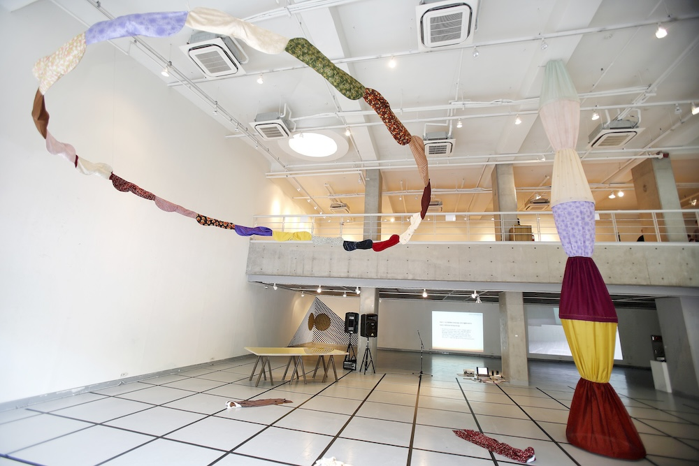
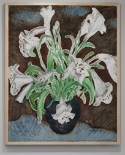
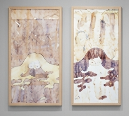
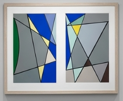
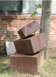
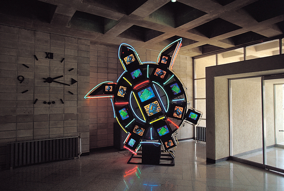
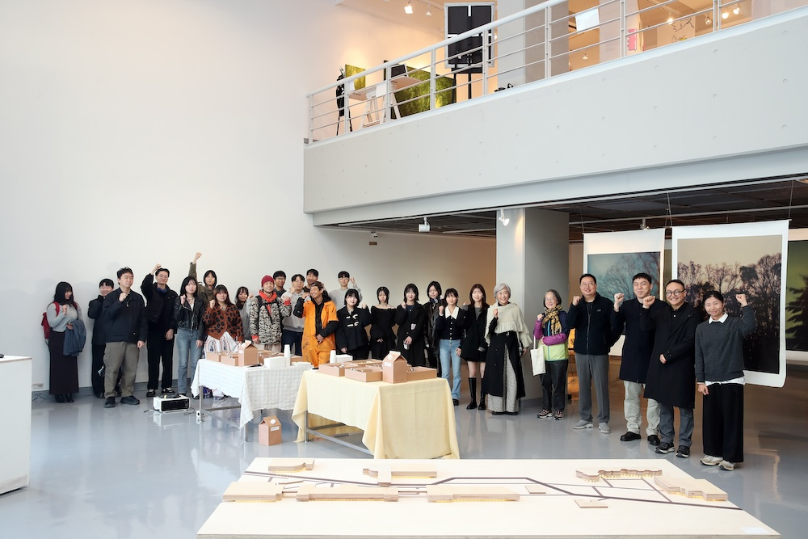

KUMAKaywon University Museum of Art는 계원예술대학교의 부설 미술관으로, 예술과 디자인 교육의 실천적 현장이자 창의적 실험이 이루어지는 문화 플랫폼입니다. 본 미술관은 전시, 교육, 아카이브, 지역사회 연계 프로그램을 통해 동시대 시각문화에 대한 비판적 담론을 형성하고, 학생·연구자·현장 전문가 간의 교류를 촉진합니다. 또한 산업체와의 협업 전시, 학제 간 융합 프로젝트를 통해 미래 예술교육의 새로운 방향을 제시하고 있습니다. KUMA는 대학 내·외부의 다양한 구성원이 참여하는 열린 예술 생태계를 지향하며,예술이 일상과 사회를 연결하는 다리 역할을 수행합니다.
대표 소장품
-
— 유연화, ‹수선화›, 유화, 1000×1000mm, 1988년

-
— 석영기, ‹꿈›, 수묵화, 1050×770mm, 2005년

-
— Roy Lichtenstein, ‹삼각 구도와 하늘›, 아크릴, 1200×2400mm, 2000년

-
— 강은엽, ‹빈틈과 균형›, 금속, 600×600×100mm, 1990년

-
— 백남준, ‹거북이›, 영상, 3350×400×2500mm, 1994년

| 위원장 | 최정심 관장 [전시콘텐츠디자인과] |
| 위원 | 홍승철 교수(학예사) [순수미술과] 서동진 교수 [융합예술과] 오형근 교수 [사진예술과] 최슬기 교수 [시각디자인과] 하지훈 교수 [리빙가구디자인과] 윤효진 교수 [전시콘텐츠디자인과] 이영준 교수 [서울과학기술대학교 융합교양학부] |
| 행정지원 | 오정석 팀장 [실습지원팀] |
| Current기획전 | 숲을 보는 법 | 2024.11.01—11.11 |
| 연계 전시 | 자연관찰자의 집 part.2 | 2024.10.23—11.30 |
| 과제전 | 공간연출과 2024-2 | 2024.01.08—12.17 |
| AFTERSCHOOL | 51 The Movement | 2024.01.15—02.04 |
| AFTERSCHOOL | 52 An Image of a Fox’s Window | 2024.02.05—02.25 |
| 기획전 | The Golden Era / 好時節전 | 2024.03.06—03.19 |
| 과제전 | 순수미술과 전공심화 | 2024.05.16—05.21 |
| 기획전 | 주머니속의 송곳 | 2024.05.22—05.28 |
| 과제전 | 전시콘텐츠디자인과 2024-1 | 2024.05.29—06.04 |
| 과제전 | 융합워크샵 | 2024.06.05—06.11 |
| 과제전 | 공간연출학과 2024-1 | 2024.06.12—06.18 |
| 과제전 | 애니메이션과 | 2024.06.19—06.25 |
| ??? | 대학 공유·협력 경기디자인협회 한·중 국제전시회 | 2024.06.26—07.02 |
| 과제전 | 건축디자인과 | 2024.07.03—07.09 |
| 기획전 | 의왕시 사진전 | 2024.07.24—07.30 |
| 기획전 | Picture Calendar | 2024.10.02—10.08 |
| 기획전 | 복구하다 :창고 | 2024.10.09—10.15 |
{kind=link}
대한민국 경기도 의왕시 계원대학로 66
123-456-7890
info@kuma.com
